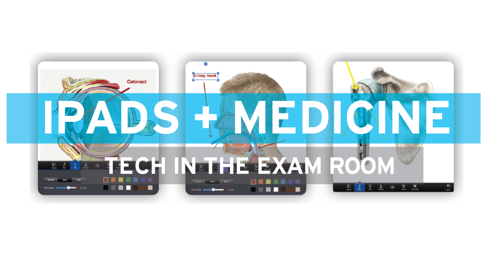
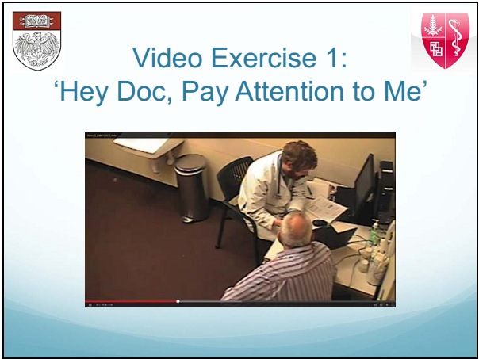
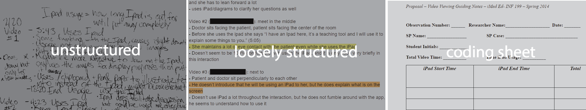
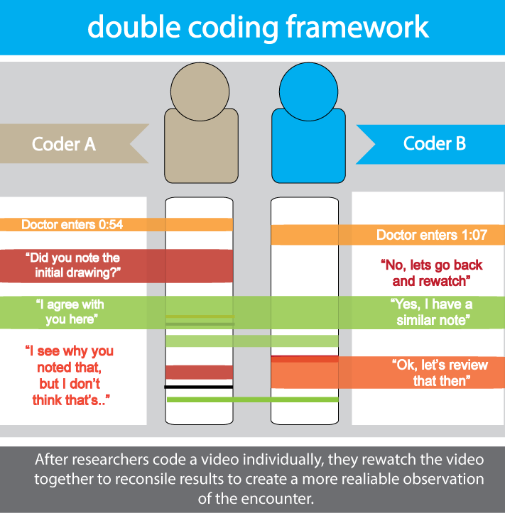
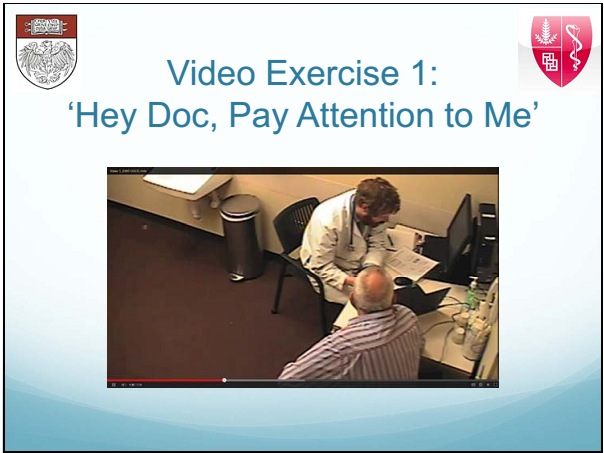
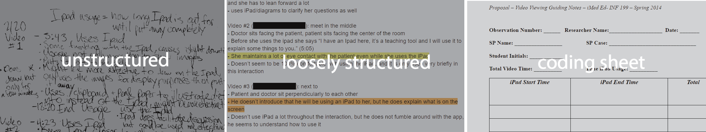
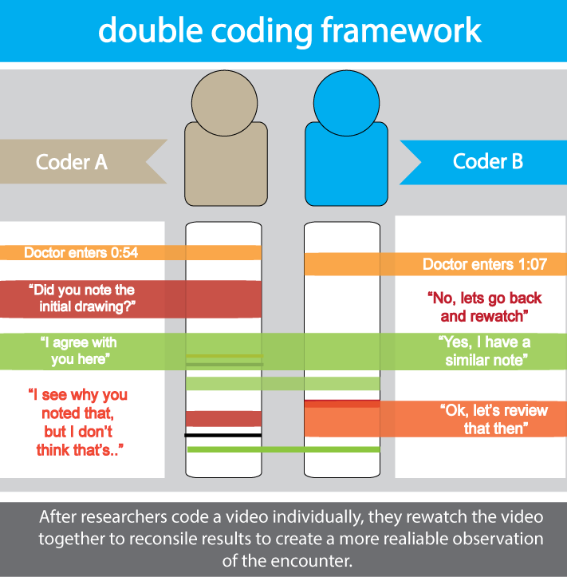

.jpg) 





Problem Statement
- Mobile technology is an increasingly prevalent part of the doctor-patient experience, technology etiquette, effective usage and its effect on clinical interaction remains relatively under examined.
- UC Irvine School of Medicine issued iPads to all Medical Students, accompanied with a set of usage guidelines, these guidelines were not extensively evaluated with students in the program.
Background and Premise of the Study
Introduction
- Our team worked with Dr. Julie Youm of UC Irvine School
of Medicine and Professor Yuan Chen of the School of Information and Computer Science, to analyze and code more than 85 videos of student doctors
completing a simulated visit with patient actors. For the purposes of this portfolio, I will discuss
my contributions, challenges in encountered over the course of this projects and the creation of
a framework to address these challenges.
Example of Clinical Interaction Video
Questions
- How and why are students using iPads with patient actors?
- What are some standardized, codifiable ways to measure doctor-patient interaction?
- Does the use of iPads in the clinical setting place an undue burden on physicians ability to conduct primary care visit?
- What improvement, if any, can be suggested to improve iPad usage in the clinical setting?
Through discussions with stakeholders,focus groups with student doctors and a review of existing literature we sought to address some of these questions:
Methodology
- Creating reliable and consistent coding methodology that also captures the
range of events that occurs within an encounter was the main challenge in addressing our
prevailing questions. Our team began with loosely structured note taking, with instruction
to focus on patient perceived ability to view the iPad screen, verbal consent to use the
device, narration of iPad use and instances where issues with familiarity and fluidity were
observed. Criteria guided by both UC Irvine’s iPad use guidelines and by literature
relating to electronic health records usage with patients.
Transition from Unstructed to Coded Pratice
- After multiple evolution of our coding scheme, the categories were
simplified to focus on more measureable impacts to the patient experience, including length
of interaction, seating arrangement between doctor and patient, number of medical illustrations
used in patient education and whether the iPad was used in consecutive and in internal periods.
These categories were captured on standardized coding sheet that our reacher team filled as we
individually watched encounter videos. To test reliability of this scheme each researcher watched
a test set of ten videos and results were compared across each researcher set. Unable to
establish reliability in the coding scheme after several
more iterations of the coding sheet, we moved to a double coding practice
Background and Premise of the Study
-
In double coding practice the video set was divided among four researches
with each video being view by at least two researchers. Each would watch the
assigned video independently filling out the coding sheet. Then the two would
collaboratively watch the video comparing coding results and come to agreement
on action timing, the inclusion of events during the encounter and to ensure accuracy
of the quantitative measures collected. Agreement practice involved combining accounts of
actions that occurred in a three to five second window of one another. The purpose of the
double coding practice was to ensure reproducible video coding results, in a manner that
is difficult to produce with a single viewing coding method.
Lessons Learned
- In this study we found the most significant variable in the exam room to be the seating arrangement between doctor-patient. Almost none of the student doctors rearranged seating in the room, using the room as is. Leaving the iPad far from the patient and creating difficult view angles in most changes. Starting this study we expected eye-contact, issues the iPad itself or a lack of training to have the most impact on the patient experience. Often the conditions surrounding technology, like the setup of the exam room, are more impactful that the technology itself.
- Lab results presented on the device versus on paper was another important element contributing to the most ‘successful’ uses of the iPad. In our exploratory study, student were given paper results, later in the double coded portion of our study results were only delivered via iPad. This forced the student doctors to integrate the iPad further and orient themselves close to the patient due to finer details of a lab results sheet. Commitment to a single form factor can create a more integrated , focused experience for both primary and secondary users of technology in the exam room and perhaps in other analogous spaces.
- Broadly, I have come to understand the creation and validation of a research methodology can be the most laborious and important part of a research study.
Through discussions with stakeholders,focus groups with student doctors and a review of existing literature we sought to address some of these questions: